ADME, cheminement des contaminants dans l'organisme
Tout contaminant suit le cycle ADME, cheminement des contaminants dans l'organisme : Absorption, Distribution, Métabolisme (biotransformation), Élimination. La voie inhalatoire domine en milieu de travail ; les propriétés physico-chimiques (solubilité, taille, liposolubilité) gouvernent chaque étape. En mine, le forage produit de la silice respirable, les Solvants d'atelier passent par la peau, et les gaz d'échappement diesel atteignent les alvéoles.
Table des matières
- Voies d'exposition
- Effets locaux vs systémiques
- Absorption
- Distribution et stockage
- Biotransformation
- Élimination et demi-vie
- Application terrain
- Ressources
Voies d'exposition
| Voie | Importance milieu travail | Facteurs clés |
|---|---|---|
| Inhalation | Prédominante | Concentration, durée, solubilité, débit ventilatoire |
| Cutanée | Importante (Solvants (hub), Pesticides, mercure) | État de la peau, liposolubilité, surface, occlusion |
| Digestive | Mineure (hygiène, mains à la bouche) | Forme particulaire, ingestion accidentelle |
| Injection / oculaire | Accidentelle | Aiguilles, pistolets haute pression, corrosifs |
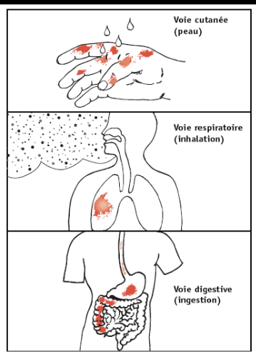
Toucher l'image pour l'agrandirVoir Aérosols et Gaz et vapeurs pour la mesure.
Effets locaux vs systémiques
- Effet local : au point de contact (peau, yeux, voies respiratoires supérieures). Typiquement causé par les irritants et corrosifs. Exemple : chlore.
- Effet systémique : après absorption et distribution sanguine vers un organe-cible. Exemples : plomb (sang, SNC, rein), tétrachlorure de carbone (foie).
Termes par organe-cible : hépatotoxique, néphrotoxique, neurotoxique, dermatotoxique, pulmotoxique.
Absorption
Franchissement des membranes
Les contaminants traversent les membranes biologiques selon leur taille, leur charge et leur liposolubilité. Les molécules liposolubles diffusent passivement à travers la bicouche ; les petites molécules hydrosolubles passent par les pores ou les transporteurs protéiques.
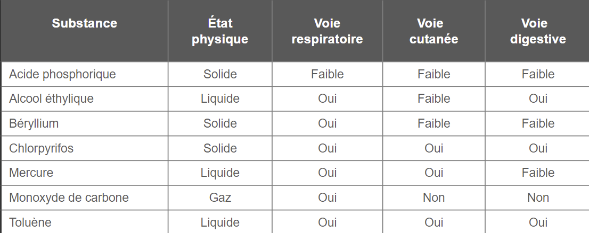
Toucher l'image pour l'agrandirInhalation (gaz et vapeurs)
| Solubilité dans l'eau | Site d'absorption | Exemple |
|---|---|---|
| Très hydrosoluble | Mucus nasal, voies respiratoires supérieures | Acétone, ammoniac, formaldéhyde |
| Peu hydrosoluble / liposoluble | Alvéoles, vers le sang | Hexane, benzène, CO |
L'anatomie alvéolaire (surface ~80 m², paroi ~1 µm) favorise un passage rapide vers le sang pour les composés liposolubles.
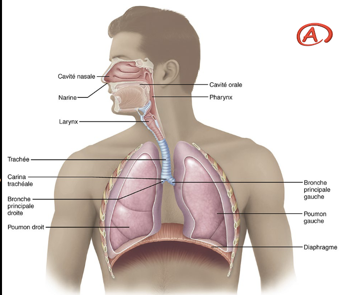
Toucher l'image pour l'agrandir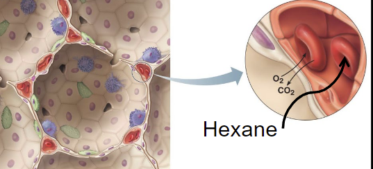
Toucher l'image pour l'agrandirFacteurs : concentration, durée, solubilité, réactivité, débit sanguin (l'effort augmente la captation).
Inhalation (aérosols)
- Inhalable : passe le nez.
- Thoracique : atteint la trachée et les bronches.
- Respirable : atteint les alvéoles (< ~5 µm).
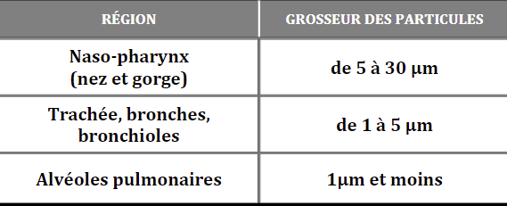
Toucher l'image pour l'agrandirLe système respiratoire dispose de défenses qui éliminent une partie des particules : tapis mucociliaire, toux, macrophages alvéolaires.
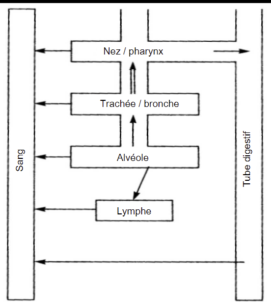
Toucher l'image pour l'agrandirVoir Aérosols pour les courbes ACGIH/ISO.
Cutanée
- Barrière = couche cornée (cellules mortes).
- Traversée privilégiée par les molécules ni trop liposolubles ni trop hydrosolubles.
- Facteurs aggravants : eau, bases fortes, solvants, traumatismes, occlusion.
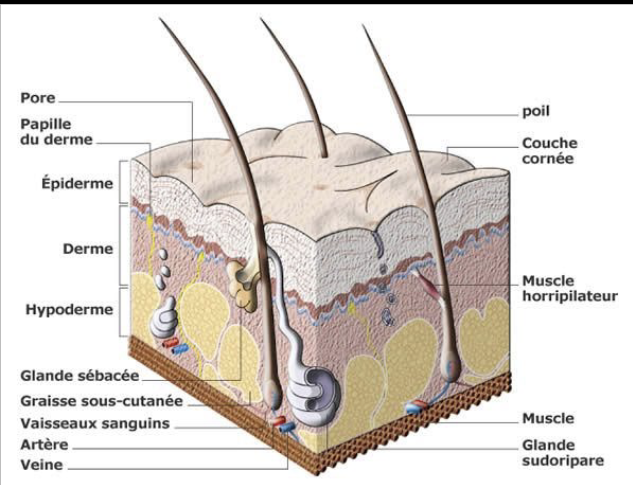
Toucher l'image pour l'agrandirL'absorption varie selon la région du corps. Le scrotum, le visage et le cuir chevelu absorbent beaucoup plus que les avant-bras à exposition équivalente.
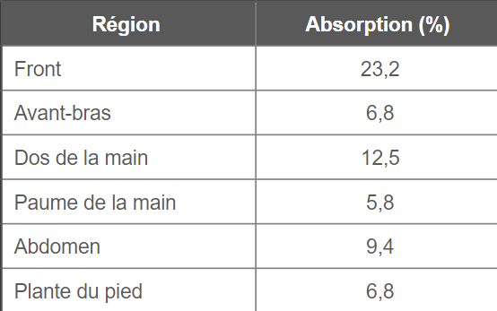
Toucher l'image pour l'agrandirDigestive
- Surface ~200 fois la surface corporelle, muqueuse mince.
- Absorption du Pb : 5-15 % chez l'adulte ; jusqu'à 60-80 % à jeun ; 30-50 % chez l'enfant.
Distribution et stockage
Une fois absorbé, le contaminant se distribue dans les compartiments de l'organisme selon sa nature.
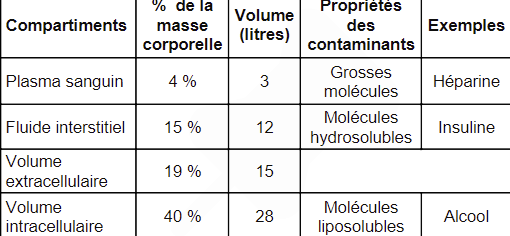
Toucher l'image pour l'agrandir| Compartiment | Exemple typique |
|---|---|
| Protéines plasmatiques | Métaux toxiques en milieu de travail liés à l'albumine |
| Foie et rein | Cadmium (métallothionéine) |
| Tissu adipeux | DDT, dioxines, PCB, solvants liposolubles |
| Os | Plomb (T1/2 ~20-30 ans), fluor, strontium |
| Cerveau | Barrière hématoencéphalique (BHE) sélective |
| Fœtus | Barrière placentaire (peu protectrice pour beaucoup de toxiques) |
La barrière hématoencéphalique est sélective : elle filtre les substances hydrosolubles mais laisse passer les liposolubles (méthylmercure, solvants).
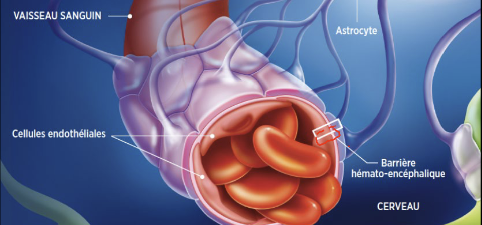
Toucher l'image pour l'agrandirLa barrière placentaire est peu protectrice contre la majorité des toxiques industriels (plomb, méthylmercure, solvants, monoxyde de carbone).
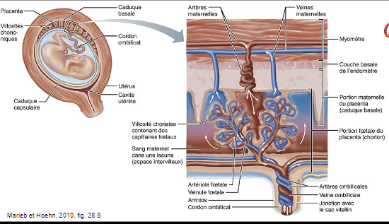
Toucher l'image pour l'agrandirBiotransformation
Lieu principal : foie (autres : rein, poumon, peau, intestin).
| Phase | Réactions | Rôle |
|---|---|---|
| Phase I | Oxydation (cytochromes P450), réduction, hydrolyse | Ajoute un groupe fonctionnel (-OH, -COOH) |
| Phase II | Conjugaison (glucuronide, sulfate, glutathion, acétyl) | Augmente l'hydrosolubilité pour excrétion |
Attention : la biotransformation peut augmenter la toxicité (bioactivation). Exemples : benzène → benzoquinone (médullotoxique), méthanol → formate (acidose, cécité), hexane → 2,5-hexanedione (neurotoxique).
Élimination et demi-vie
| Voie d'excrétion | Substances typiques |
|---|---|
| Rénale (urine) | Métabolites hydrosolubles, Métaux toxiques en milieu de travail conjugués |
| Fécale (bile) | Grosses molécules, métaux comme le Mn |
| Respiratoire | Solvants volatils (acétone, éthanol, CO) |
| Autres | Lait maternel, sueur, salive, cheveux, ongles |
Demi-vie (T1/2) : temps requis pour éliminer 50 % de la dose interne.
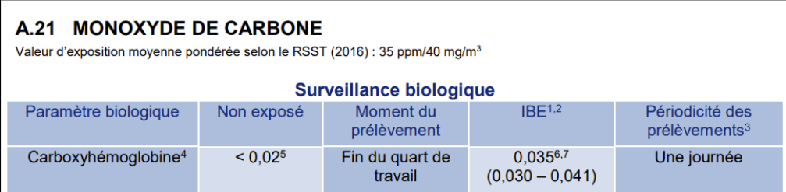
Toucher l'image pour l'agrandirExemples concrets
- Acétone : ~3 h
- Méthylmercure : ~70 jours
- Plomb dans le sang : ~30 jours ; dans l'os : 20-30 ans
- Hexane : élimination rapide mais bioactivation prolonge l'effet
Application terrain
En contexte minier, les voies dominantes varient selon le poste
| Poste / activité | Voies dominantes | Substances |
|---|---|---|
| Foreur, profil RPS et leadership de chantier souterrain | Respiratoire (alvéolaire) | Programme de prévention silice cristalline respirable, NOx post-tir |
| Conducteur d'engin diesel | Respiratoire (alvéolaire) | DPM, CO, NO2 |
| Mécanicien d'atelier | Respiratoire + cutanée | Solvants, huiles usées |
| Soudeur | Respiratoire (fumées < 1 µm) | Fe, Mn, Cr (VI) inox, Ni |
| Boutefeu / chargement | Respiratoire | Nitrate d'ammonium, gaz de tir (NOx, CO) |
| Personnel d'usine | Respiratoire + cutanée | Réactifs de flottation, cyanures (or) |
Le forage humide réduit considérablement la fraction respirable libérée. Les cabines pressurisées avec filtration P100 protègent les opérateurs d'engins. Les délais de réentrée post-tir laissent à la ventilation souterraine le temps d'évacuer les gaz.
Ressources
| Document | Type | Source |
|---|---|---|
| Fiches toxicologiques par voie | Fiches | IRSST, INRS |
| Guide IBE (BEI booklet) | Référentiel | ACGIH |
| Grille d'analyse des voies d'exposition par poste | Gabarit | À développer en interne |
Articles wiki connexes
- Introduction à la toxicologie industrielle
- Toxicité, dose-réponse et DL50
- Toxicité du système respiratoire
- Hépatotoxicité et néphrotoxicité
- Aérosols
- Gaz et vapeurs
[[Wiki SST/00 - Accueil/�
Pages qui pointent ici (18)
- 🎯 Démarrage rapide, conseiller SST Toxicologie
- 🎯 Démarrage rapide, superviseur Toxicologie
- 🏠 Wiki Toxicologie, mines Toxicologie
- Amiante Hygiène industrielle
- Amiante Toxicologie
- Hépatotoxicité et néphrotoxicité Toxicologie
- Introduction à la toxicologie industrielle Toxicologie
- Métaux toxiques en milieu de travail Hygiène industrielle
- Métaux toxiques en milieu de travail Toxicologie
- Nanoparticules Toxicologie
- Neurotoxicité, hématotoxicité et toxicité endocrinienne Toxicologie
- Rayonnements ionisants et non ionisants Hygiène industrielle
- Solvants organiques Hygiène industrielle
- Solvants organiques Toxicologie
- Toxicité du système respiratoire Toxicologie
- Toxicité, dose-réponse et DL50 Toxicologie
- Toxicocinétique Toxicologie
- Toxicologie clinique Toxicologie